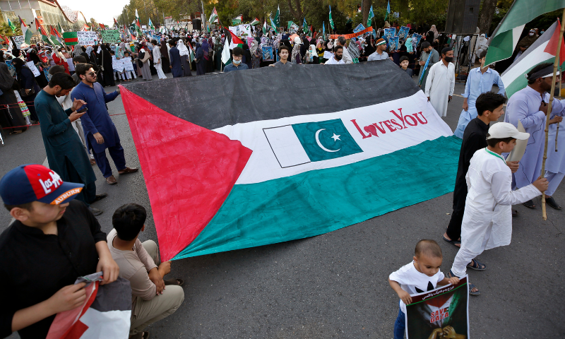

Pakistan stand with Palestine
Pakistan has consistently shown unwavering support for Palestine, standing shoulder to
shoulder with its
people in their struggle for freedom and justice. This solidarity stems from a deep-rooted belief in the
principles of self-determination, human rights, and international law. Pakistan has been vocal in condemning
the illegal occupation of Palestinian lands and the systematic oppression faced by the Palestinian people.
The Pakistani government and its people have always advocated for a just and lasting solution to the
Israeli-Palestinian conflict, based on the establishment of an independent and sovereign Palestinian state
with East Jerusalem as its capital, in accordance with relevant United Nations resolutions. Pakistan has
provided moral, diplomatic, and political support to Palestine on various international platforms, urging
the global community to uphold the rights of the Palestinian people and hold Israel accountable for its
violations of international law. Furthermore, Pakistan has also contributed to humanitarian assistance
efforts to alleviate the suffering of Palestinians, demonstrating its commitment to standing with Palestine
in their quest for dignity, peace, and prosperity.
پاکستان فلسطین کے ساتھ کھڑا ہے
ایک نکتہ واضح کرنا: یہ مواد اردو میں ترجمہ کرنے کی ضرورت ہے۔ یہاں آپ کی ترجمہ کیا
ہے:
"پاکستان نے فلسطین کی حمایت میں استقامت دکھائی ہے، اس کے لوگوں کے لئے آزادی اور انصاف کی جنگ میں ان کے ساتھ
کندھے سے کندھا ملاتے ہوئے۔ یہ یکجا کمی اپنے خود کے توقعات میں ، انسانی حقوق اور بین الاقوامی قانون کی بنیاد
پر نکلتی ہے۔ پاکستان نے پلسٹائن کی زمینوں کی غیر قانونی قبضہ کرنے اور فلسطینی لوگوں کو مواجہہ ہونے والے
نظامی زیادتی کو مذمت کرنے میں صوت بلند کیا ہے۔ پاکستانی حکومت اور اس کے لوگ ہمیشہ ایک منصف اور مستقل حل کی
حمایت کرتے رہے ہیں ، جو اقوام متحدہ کے متعلقہ قراردادوں کے مطابق ایک مستقل اور سرکاری فلسطینی ریاست کی قیام
کی بنیاد پر ہو۔ شرقی بیت المقدس کو اس کا دارالحکومت بنایا۔ پاکستان نے دباؤ ڈالنے والے مختلف بین الاقوامی
پلیٹ فارمز پر فلسطین کی انسانیتی اور سیاسی حمایت فراہم کی ہے ، جس میں عالمی برادری سے فلسطینی لوگوں کے حقوق
کو قائم رکھنے اور اسرائیل کو بین الاقوامی قانون کی خلاف ورزیوں کے لئے احتساب کرنے کی اپیل شامل ہے۔ علاوہ
ازیں، پاکستان نے فلسطینیوں کے دکھ کو کم کرنے کے انسانی امدادی اقدامات میں بھی اپنا کردار ادا کیا ہے، جو
دینیت ، امن اور خوشحالی کی تلاش میں فلسطین کے ساتھ کھڑے ہونے کی اپنی عزم کو ظاہر کرتا ہے۔"

Boycott all these Product
The decision to boycott Israeli products is a complex and contentious one, often rooted
in political,
social, and humanitarian concerns. Advocates of such boycotts argue that they are a non-violent means to
protest Israeli policies towards Palestinians, including the occupation of Palestinian territories and
alleged human rights violations. These individuals believe that by refusing to support Israeli
businesses and products, they can pressure the Israeli government to change its policies. However,
opponents of boycotts argue that they unfairly target Israeli civilians and businesses, potentially
harming innocent individuals who have no control over government policies. Additionally, they argue that
boycotts can hinder dialogue and cooperation between Israelis and Palestinians, making it more difficult
to achieve peace and reconciliation in the region. The debate over Israeli product boycotts is deeply
polarizing, reflecting the complexities of the Israeli-Palestinian conflict and differing perspectives
on how best to address it.
ان تمام مصنوعات کا بائیکاٹ کریں
"اسرائیلی مصنوعات کے بائیکاٹ کا فیصلہ ایک پیچیدہ اور تنازع آمیز ہے، جو عموماً سیاسی، سماجی، اور انسانیت
کی نگاہ سے دیا جاتا ہے۔ ان بائیکاٹ کے حامیوں کا دعویٰ ہے کہ یہ اسرائیلی پالیسٹنیوں کے ساتھ سیاستوں کے
خلاف احتجاج کا غیر فوجی ذریعہ ہیں، جن میں پالیسٹائنی خطے کا قبضہ اور معترضانہ انسانی حقوق کی خلاف ورزی
شامل ہیں۔ ان افراد کا یقین ہے کہ اسرائیلی حکومت کو اپنی پالیسیوں میں تبدیلی لانے کے لئے ان کو حمایت دینے
سے انکو دباؤ پہنچا سکتے ہیں۔ البتہ، بائیکاٹ کے مخالفین یہ دعویٰ کرتے ہیں کہ یہ انصاف نہیں ہے کہ انسانی
حقوق کے پرستاروں اور کاروباروں کو نشانہ بنایا جائے، جو حکومتی پالیسیوں پر کوئی کنٹرول نہیں رکھتے۔ علاوہ
ازیں، وہ دعویٰ کرتے ہیں کہ بائیکاٹ، اسرائیلیوں اور پالیسٹائنیوں کے درمیان گفتگو اور تعاون کو روک سکتا
ہے، جو علاقے میں امن اور مصالحت کو حاصل کرنے میں مشکل بنا سکتا ہے۔ اسرائیلی مصنوعات کے بائیکاٹ پر بحث
گہری اختلافات کو عکس کرتی ہے، جو اسرائیلی-پالیسٹینی تنازع اور اس پر مختلف نقطہ نظر کو کیسے حل کرنا
چاہئے، کی پیچیدگی کو ظاہر کرتی ہے۔"

Casualties of the Israel–Hamas war
As of 1 March 2024, over 31,000 people (30,228 Palestinian[1] and 1,410 Israeli[9]) have
been killed in the
Israel–Hamas war, including 88 journalists (83 Palestinian, 2 Israeli and 3 Lebanese) and over 136 UNRWA aid
workers.[10][11]
On 7 October 2023, 1,139 Israelis and foreign nationals, including 764 civilians, were killed, and 248
persons taken hostage during the initial attack on Israel from the Gaza Strip.[2][12][13] Since then, over
30,228 Palestinians (the majority of whom were women and minors) in the Gaza Strip have been killed
according to the Gaza Health Ministry. Several thousand more are missing and presumed trapped under
rubble.[14][15] The Gaza Health Ministry does not distinguish between combatant and civilian casualties in
its reports. The IDF estimated 12,000 Hamas combatants were killed as of 19 February 2024.[16][17] A further
382 Palestinians were killed in the West Bank by Israel military and settlers.[18] Casualties have also
occurred in other parts of Israel, as well as in southern Lebanon, and Syria.[19]
اسرائیل-حماس جنگ کے نقصانات
یکم مارچ 2024 تک، 31,000 سے زیادہ لوگ (30,228 فلسطینی[1] اور 1,410 اسرائیلی[9])
اسرائیل-حماس جنگ، بشمول 88 صحافی (83 فلسطینی، 2 اسرائیلی اور 3 لبنانی) اور 136 سے زائد UNRWA امداد
کارکنان[10][11]
7 اکتوبر 2023 کو 1,139 اسرائیلی اور غیر ملکی شہری جن میں 764 عام شہری بھی شامل تھے، اور 248 مارے گئے۔
غزہ کی پٹی سے اسرائیل پر ابتدائی حملے کے دوران یرغمال بنائے گئے افراد۔[2][12][13] تب سے، ختم
غزہ کی پٹی میں 30,228 فلسطینی (جن میں اکثریت خواتین اور نابالغوں کی تھی) ہلاک ہو چکے ہیں۔
غزہ کی وزارت صحت کے مطابق۔ مزید کئی ہزار لاپتہ ہیں اور خیال کیا جاتا ہے کہ اس کے نیچے پھنسے ہوئے ہیں۔
ملبہ[14][15] غزہ کی وزارت صحت جنگجو اور شہری ہلاکتوں میں فرق نہیں کرتی ہے۔
اس کی رپورٹس IDF کا اندازہ ہے کہ 19 فروری 2024 تک حماس کے 12,000 جنگجو مارے گئے۔[16][17] ایک مزید
مغربی کنارے میں اسرائیلی فوج اور آباد کاروں کے ہاتھوں 382 فلسطینی مارے گئے۔ ہلاکتیں بھی ہوئی ہیں۔
اسرائیل کے دیگر حصوں کے ساتھ ساتھ جنوبی لبنان اور شام میں بھی پیش آیا۔